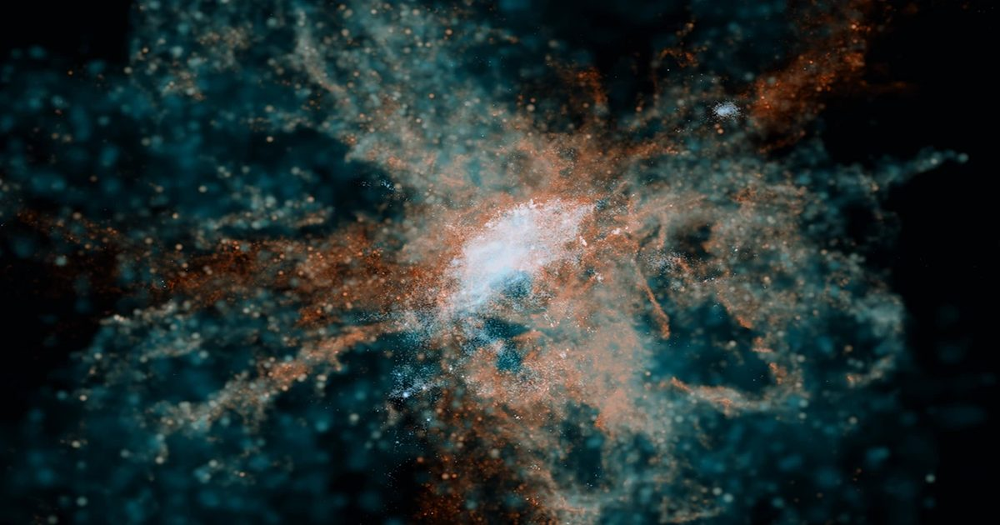

Как младенческая Вселенная получила свои первые тяжелые элементы
Еще в самые ранние эпохи Вселенной за Большим взрывом последовал период, называемый Космическими темными веками.
Это было время, когда космический суп из первичных частиц был настолько густым, что свет не мог распространяться.
Отсюда и термин «темный»; также потому, что даже с нашими лучшими телескопами мы не можем заглянуть «в» ту эпоху.
Хотя у нас нет определенной временной шкалы «век за веком», это не значит, что период истории не привел